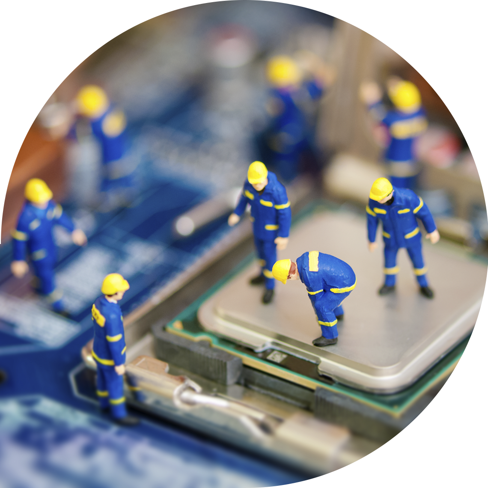

Ми живем серед вас, і лікуєм ваших друзів
Потрібна допомога твоєму компютеру чи ноутбуку
Телефонуй +1(234)5678900
Cервіс

Ми живемо в епоху високих технологій. У наш час у кожного є комп’ютер. Але жоден пристрій не може працювати вічно, а іноді може виходити з ладу. Щоб ваш пристрій працював належним чином, його час від часу потрібно підтримувати. Якщо у вас виникли проблеми з комп’ютером чи ноутбуком, ми тут, щоб допомогти вам.
- Системне діагностування;
- Домашні мережі;
- Заміна екрану;
- Встановлення / оновлення обладнання;
- Видалення вірусів / шпигунського / шкідливого програмного забезпечення;
Як ми працюєм
Запит на зустріч
Залиште запит на сайті і ми домовимся про зустріч у нашому конфортабельному офісі або назначим зустріч у зручному місці для вас.

Ремонт в офісі/будинку
Будь то ваш дім чи офіс, наш спеціаліст прибуде до вас , щоб виправити ваш комп’ютер.

Ремонт на місці
Ми відремонтуємо ваш комп’ютер у вашій присутності, або ми заберемо його до нашого магазину.
Підтримуване обладнання


Надання ІТ-підтримки та послуг для бізнесу

Кожен власник бізнесу розуміє, що комп’ютерна система повинна щодня працювати безперебійно, щоб зробити бізнес прибутковим.
Ми пропонуємо комплексні бізнес-послуги для чудового функціонування вашої мережі та комп’ютерних систем.
Ціни
| Сервіс | Ціна | Сервіс | Ціна |
| Первинна діагностика | Безкоштовно | Відновлення паролів | $39 |
| Заміна екрану | від $39 | Фізичний / електронний носій | $49 |
| Встановлення/оновлення обладнання | від $39 | Технічне обслуговування на місці | $49 |
| Домашня консультація | від $49 | Перевстановити Windows / Mac OS | $39 |
| Домашня мережа | від $99 | Очистка даних | $49 |
| Резервне копіювання / відновлення файлів | від $49 | Знищення/шифрування даних | від $79 |
Потрібен ремонт комп’ютера? Ми завжди готові допомогти!
Про нас
ASM IT - ваша універсальна компанія, яка надає найвищі якісні комп’ютерні послуги. Якою б не була модель вашого пристрою або що б не потрібно було виправити, ми пропонуємо 100% гарантію на всю нашу роботу. Наші висококваліфіковані технічні спеціалісти можуть впоратися з вашим комп’ютером чи будь-якими іншими проблемами з гаджетами вчасно та в межах вашого бюджету.
Наші результати в цифрах
| 34 281 | 453 | 20 345 |
| Відремонтованих пристроїв | 5-зіркових відгуків у всіх пошукових системах | Задоволених клієнтів |
Наші сертифіковані спеціалісти


Чому клієнти вибирають саме нас?
Якщо ваш цінний пристрій вийде з ладу, ви можете зіткнутися з різними і досить дорогими проблемами. Вибір правильного техніка насправді має значення, щоб не витрачати більше грошей, ніж потрібно. Наші сертифіковані та доброзичливі інженери можуть якомога швидше вирішити будь-яку проблему з комп’ютером, серйозну чи просту. Люди нам довіряють.
- Обслуговування в той же день
- Експертні інженери
- Без виправлення - без комісії
- Усі роботи гарантовані на 100%
- Безкоштовна перевірка стану здоров’я
- Ми відновлюємо всі ваші дані: фотографії, контакти, програми
- Відкрито 7 днів на тиждень
- Служба, орієнтована на клієнта
Відгуки

Христина Петер
Директор з маркетингу в Fresh Food
Я була рада працювати з ASM IT, оскільки їх ефективні рішення допомогли нам покращити велику кількість бізнес-процесів. Як результат, наші клієнти швидше отримують свою продукцію та стають більш задоволеними нашими послугами. Вони заслуговують вищої оцінки!

Семен Іванов
Генеральний директор StarBiz
"Ми найняли компанію ASM IT для встановлення наших комп’ютерів та мережі в нашому новому офісі. Техніки були дуже доброзичливими та корисними. Вся робота була виконана вчасно і за розумною ціною. Дякую, хлопці!"